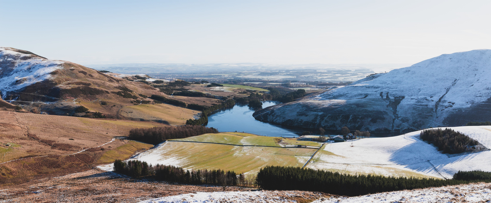
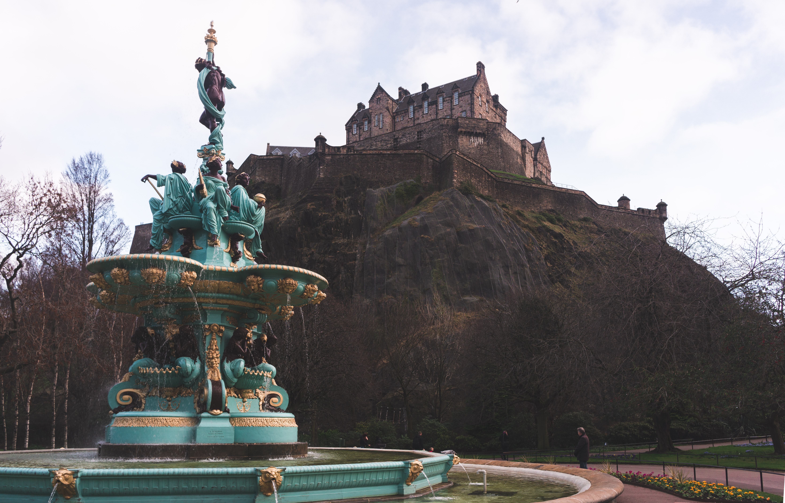
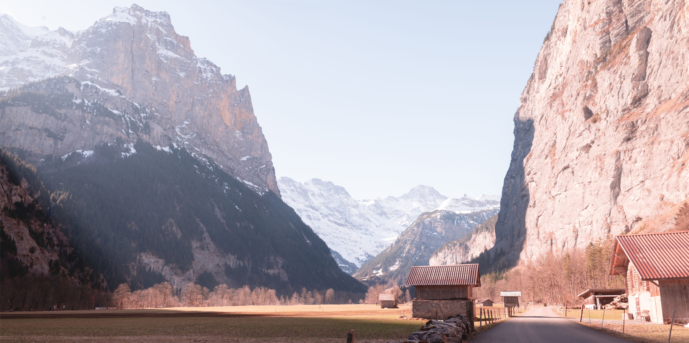
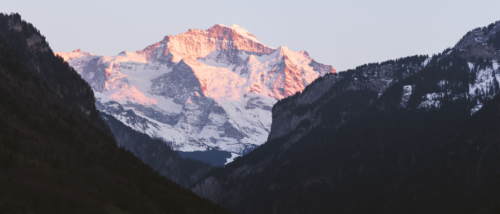
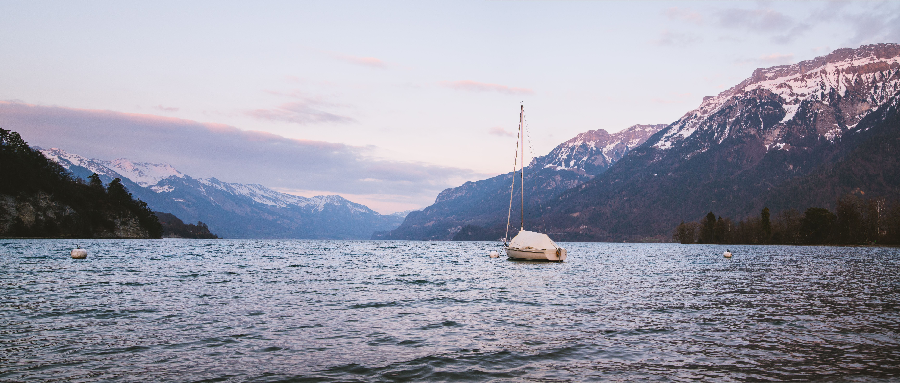

April 17th, 2019
Im writing this time in the Linux Lab of the Heriot Watt campus. I have been working here today as it is nearby and as quiet as the library is. The more I look at the photos from the trip the more and more it seems unreal, as the pictures are really unlike anything I had ever seen before. But I hope that one day I can go back and see those styles of views again.
To reflect on the trip as a whole, I think I learned a lot about myself during it and what I like and do not like. When I visited Venice the architecture was absolutely breathtaking and it was such a unique and wonderful place. However it surprised me that for me at least being in Venice was not as enjoyable as the time I had spent in the mountainside of Italy or Switzerland. I think had I been with other people, I would have liked Venice a lot more but being alone there was not as fun as it was to be alone in the mountains. Being alone there in the wilderness felt comfortable and familiar but being alone in a city like Venice was very different. That however is why I love Edinburgh as much as I do. For I can get reasonably quickly to those two very different places.

I can go to the Pentland hills and spend time there and enjoy that solitude and then go back down to the base of the hills, catch a bus and bein the City center which I know so well. Edinburgh is also home to some absolutely spectacular parks in the city. the Princes Street gardens in the shade of Edinburgh castle cannot be recommended enough, especially now that the weather has begun to get nicer and warm up. I love seeing the flowers blooming on the hill next to the castle and spending time there relaxing surrounded by the noise of the city, with the comfort of nature. I am not sure why I am writing this entry as I am really just rambling, but I hope you enjoyed the insight into my thoughts!

April 15th, 2019 - Reflecting on March 29th, 2019
Again I am in the library, ready to write the next reflection.
I woke up fairly early for my first full day in Switzerland. The hostel I had been staying at had a free breakfast in the mornings, so I ate some of that before catching the bus to the Wilderswil (Pronounced Vildersvil) train station. From here I caught the early morning train out to Lauterbrunen.
Upon getting off the train you are greeted with spectacular views of the sheer clifface all around you, with massive mountains ahead of you. The valley Lauterbrunnen is situated in is home to 72 different waterfalls. They line the cliffside all around you. From Lauterbrunnen I hiked to Stechelberg, a small village at the base of the other end of the valley. I caught a cable car up to a mountain-peak oriented village Gimmelwald.

Now at the top of the valley I began making my way towards Müren, a larger village on the top of one of the cliffs I had walked below earlier. It was truly strange being so much higher up now, looking out at the same valley you are presented with such drastically different views that it does not even look like the same place you just were. The hike to Müren was long, but upon finally getting there I got a train and a cable car back down. Then I took the train back to Interlaken and my hostel and relaxed for a bit of time, before heading out for Sunset. For sunset this night I went to a hill that was in the middle of Interlaken near my hostel. I walked up the hill and got some spectacular views of the mountains lighting up as the sun began to set. The side light on the snowy peak was absolutely outstanding, and that photo is one of my favorites from the entire trip.

April 13th, 2019 - Reflecting on March 28th, 2019
I am sitting in the central library of Edinburgh
as I type this, it is one of the places I come to most often to work and focus, as it is completely silent in the reference library where I work. Two days ago I got back from my big trip, fifteen days away from Scotland with only my backpack and camera gear to travel with. It weighed around 27 pounds with all the camera equipment and clothes packed into it. These next few days as I continue studying for my exams each day I will post a blog post reflecting on each day of the trip. This is for the first day, March 28th.
I barely got any sleep the night before I left I remember trying to but not being able to really rest well. I was incredibly excited for the trip. What seemed like a fantasy of mine was finally a reality. Waking up I had everything packed, I ate some cereal and then got the bus to the airport. My flight left early in the day with doors closing at 9:05. I landed at Basel Euroairport (in France) around 12:30.
I then caught my train to the first destination of the journey, Interlaken. Between two lakes this town is the epitome of a tourist destination with good reason! You are surrounded on all sides by beautiful views. During the journey I met two people, one from Portugal and one from Switzerland. While I was taking photos of the mountains from the train, the woman who was sat down across from me began to chuckle. I smiled at her and all she said was,'you haven't seen anything yet.' I couldn't believe her. I didn't know how they could get better than this but then somehow they did.
I went from the train station to my hostel to unload the clothes to cut down on some of the weight before going out for my first Swiss sunset. I was running around like a chicken with its head cut off trying to decide which lake I should go to. I could go towards the lake I had taken the train along earlier, Thunersee, or head to the other lake, Brienzersee. I went with the latter in the end. The shorefront was gorgeous with the surrounding mountains catching the light absolutely magnificently as the sun set behind us. There was a lone sail-boat on the lake bobbing as the waves rocked it back and forth. Walking home under the streetlights along the riverside I knew that my journey had only just begun.

March 4th, 2019
Welcome to a new section of the website! The blog. Here I
intend to write about what is happening at school or in my life right now.
These past few weeks out in Scotland have been quite amazing.The work has
not been too bad. The challenge is learning to balance the
travel I am doing over here and the work I have. But being in this environment
has also given me a much clearer insight into what works for me in terms of being
productive, and I have begun to work in places, which work for me. I don't like
working in the library (right now I am writing this from the Campus' empty
lunchroom).
So far in the past two months, I have visited (disregarding
Scotland and Iceland's layover) four new countries. I visited Ireland and saw
the Cliffs of Moher. Went to Denmark to explore Copenhagen and climb church spires,
took a day trip to Sweden, and another to England. The England trip was completely on accident,
but that story is best left for another time.
The month of March will be fairly busy for me, and I do not
plan on really traveling all that much until the very end of March, as I will
have a few final assignments due at the end of the March which are pivotal to my
Grade out here. I hope to go to Switzerland and Italy then, but we will
see what I end up being able to get accomplished. On that note, I think I
am going to head home and begin to make dinner (over a crossword puzzle).
Thanks for reading!